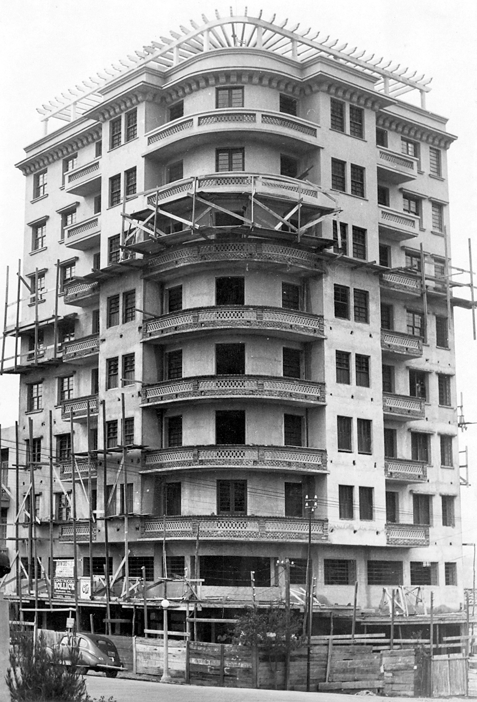
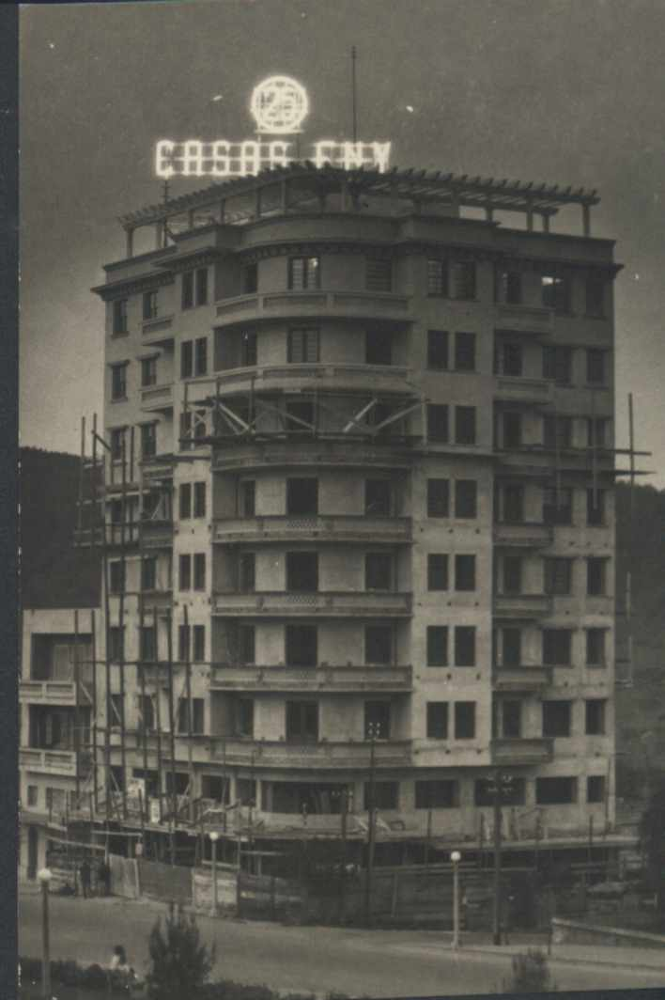
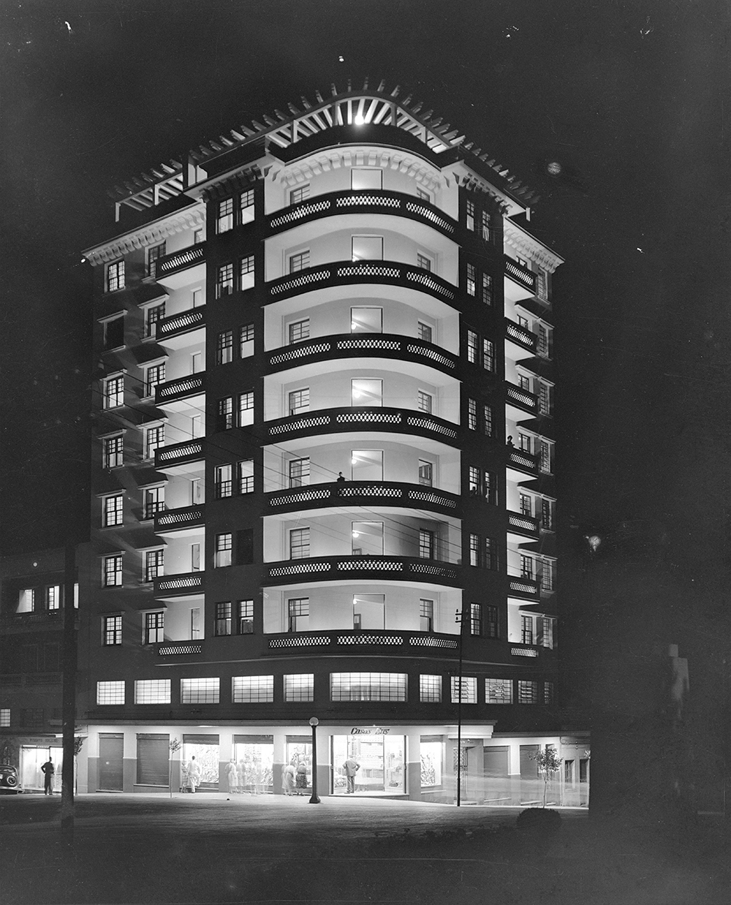

O Edifício Mauá é um significativo representante do estilo Art Déco em Santa Maria, refletindo um período de efervescência cultural e econômica na cidade, impulsionado em grande parte pelo desenvolvimento ferroviário. Sua arquitetura é um testemunho da modernização da paisagem urbana local em meados do século XX.
O edifício foi construído na década de 1950 , mais especificamente no ano de 1950 , e está localizado na Avenida Rio Branco, nº 888, esquina com a Rua Silva Jardim.
O projeto é de autoria do arquiteto Kurt W. A. Walter. Sua construção insere-se em um período de grande desenvolvimento para Santa Maria, que, por sua posição como importante entroncamento ferroviário, vivenciava um notável crescimento populacional e econômico. A arquitetura Art Déco foi a linguagem escolhida para expressar a modernidade e o progresso da cidade nesse período.
Desde sua concepção, o Edifício Mauá foi projetado para uso misto, abrigando atividades comerciais no pavimento térreo e residenciais nos andares superiores, função que mantém até hoje. Os textos fornecidos, no entanto, não detalham os nomes específicos das lojas ou eventos que o prédio abrigou ao longo de sua história. Atualmente, o Edifício Mauá é reconhecido como um importante bem do patrimônio cultural edificado de Santa Maria. Ele integra o "Roteiro Art Déco" do projeto de extensão Mapeando Memórias, uma iniciativa da Universidade Franciscana que visa a educação patrimonial e a valorização do acervo arquitetônico da cidade por meio de roteiros interpretativos e ações junto à comunidade.
CARDOSO, Anelisa. Cultura e identidade: o patrimônio histórico edificado de Santa Maria, RS. 2024. Trabalho de Conclusão de Curso (Graduação em Arquitetura e Urbanismo) - Universidade Franciscana, Santa Maria, 2024.
FLORES, Anelis Rolão; PEREIRA, Clarissa de Oliveira; QUERUZ, Francisco. Mapeando Memórias: o projeto interpretativo como ferramenta de preservação. Cadernos de Pós-Graduação em Arquitetura e Urbanismo, São Paulo, v. 25, n. 1, p. 147-165, 2025.
GRASSI, Eduardo Corrêa de Barros; COELHO, Eva Regina Barbosa. Resgate histórico do edifício Cauduro de Santa Maria-RS e seu aproveitamento turístico. Disc. Scientia. Série: Artes, Letras e Comunicação, Santa Maria, v. 9, n. 1, p. 205-221, 2008.
KÜMMEL, Márcia Barroso. Estudo sobre o art déco em Santa Maria/RS: o caso da Avenida Rio Branco e seu patrimônio edificado. 2013. 209 f. Dissertação (Mestrado em Patrimônio Cultural) - Universidade Federal de Santa Maria, Santa Maria, 2013.
PIQUINI, Giulia et al. Mapeando memórias: a história do patrimônio arquitetônico contada através das fachadas. In: SIMPÓSIO DE ENSINO, PESQUISA E EXTENSÃO, 27., 2023, Santa Maria. Anais [...]. Santa Maria: UFN, 2023.
RODRIGUES, Lidia Glacir Gomes. Audiovisual como ferramenta de educação patrimonial com enfoque no Art Déco em Santa Maria, RS. 2021. 143 f. Dissertação (Mestrado em Patrimônio Cultural) - Universidade Federal de Santa Maria, Santa Maria, 2021.
RODRIGUES, Lidia Glacir Gomes; PONS, Mônica Elisa Dias. Art Déco no sul do Brasil divulgado por meio de audiovisual. Revista Conexão - Comunicação e Cultura, v. 21, n. 41, p. 137-147, jan./jun. 2022.